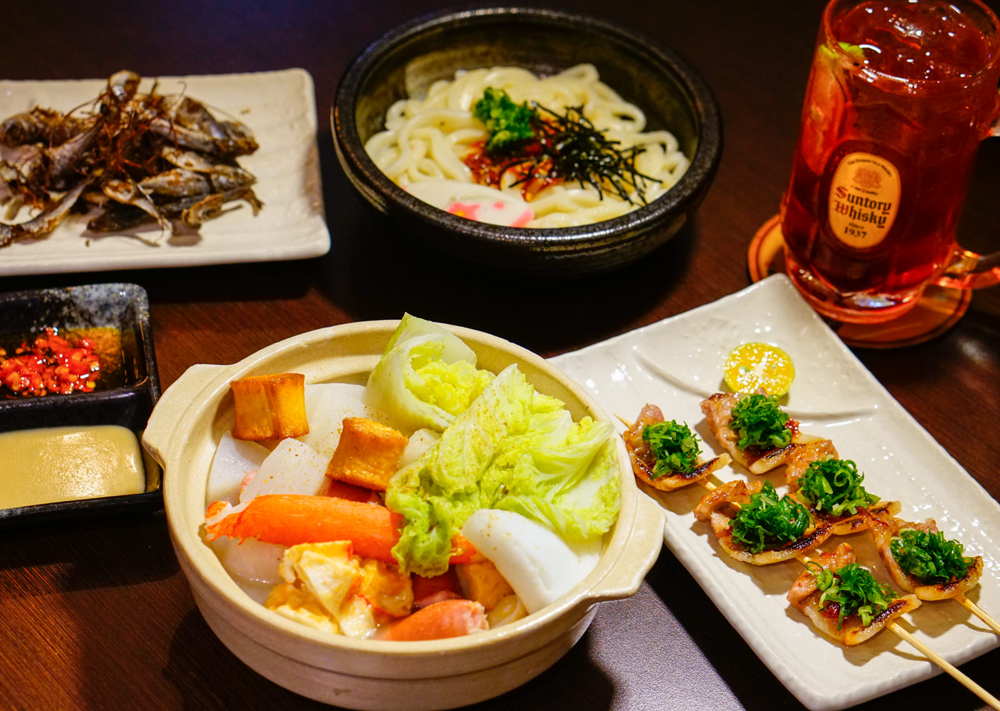
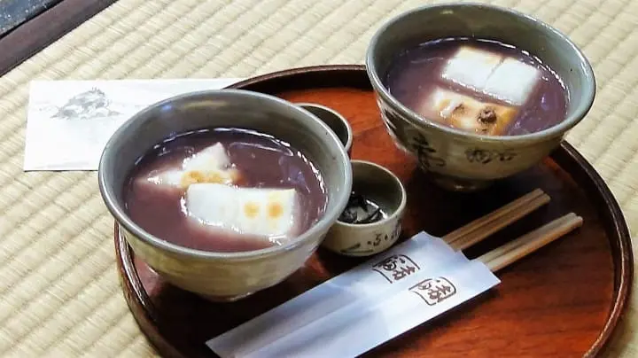

職人手作關東煮
慢火熬煮至晶瑩透亮的高湯大根、手作彈牙蒟蒻與鮮甜魚漿。看似樸實無華，卻盛滿了冬日最初的溫熱。

冬令大根味噌粕汁
將冬日熟成味噌與京都手作酒粕融合，加入鮮甜時蔬慢火熬製。湯頭濃郁綿密，帶有淡淡酒香，極度暖胃。

炭火醬燒鴨胸
宜蘭櫻桃鴨胸煎至焦香酥脆，再移至備長炭上慢烤，刷上主廚熟成醬油與清酒膏。淡淡的煙燻炭香，暖心而沉穩。

慢熬紅豆年糕湯佐暖心熱薑茶
綿密紅豆沙與手打年糕慢熬，年糕外皮經炭火現烤至微焦香脆、內裡軟糯。搭配溫熱微辛的黑糖薑茶，最是療癒。